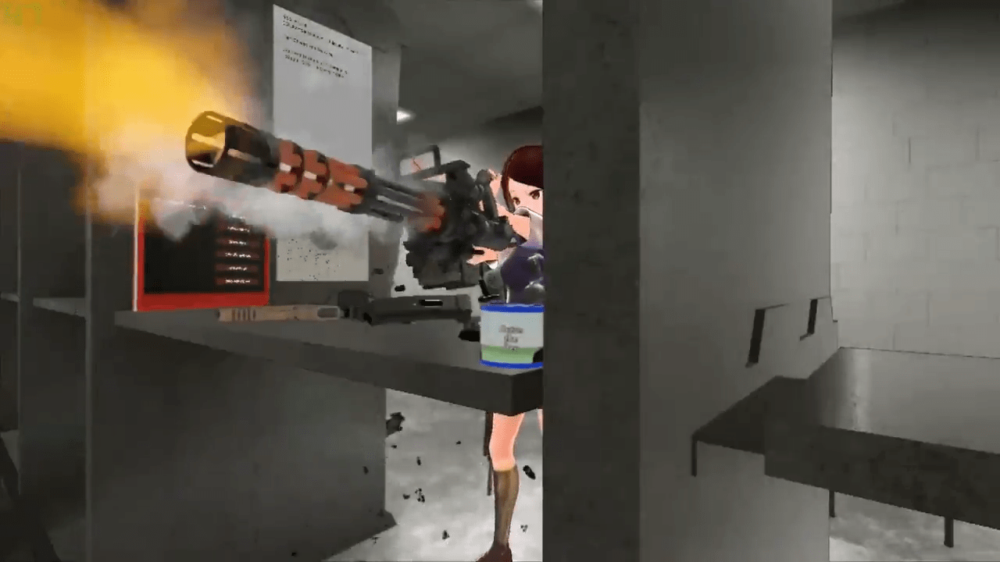
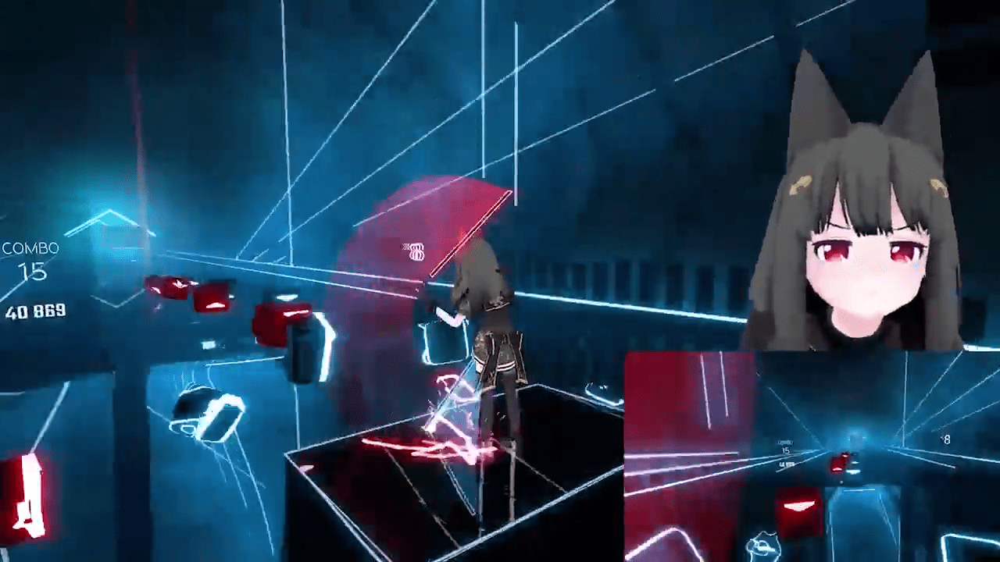

VirtualMotionCapture可以做什么？
进入VR游戏 拍摄
通过使用SteamVR的功能externalcamera.cfg的MR合成功能、可以将自己的虚拟人进入VR游戏中进行摄像。如果握着第三个控制器、可以移动摄像机，像摄影师一样进行拍摄
虚拟摄像头MR合成
就算没有第三个控制器、设置虚拟控制器，也能达到一样的效果。

可以自由自在的进行手部控制
通过控制器或键盘，可以自由的改变手部形状。也有和VRChat相同操作的预设值、不需要特殊的设置就可以开始使用。按下控制器的按钮就像手握着东西行动一样，很容易传递信息给看到动作的其他人。
任意设置手部动作和脸部标签
不仅仅手部有预设值、手指也可以随意调整为任何的角度、可以根据游戏来进行任意调整为任何想要的收拾。表情也可以通过控制器进行任意的调整。

追踪者还可以控制头部和手部。
不同于一般的通过HMD和控制器来进行追踪，头部和手部可以设置为追踪者模式来进行控制。可以使用到VR游戏以外的场景。

通过追踪者模式可以进行游戏直播
把头部和手部设为追踪者模式，可以解放手来通过键盘或控制器来进行游戏直播。通过键盘还可以改变脸部表情和手部动作、实时切换来说话。
VMC可以根据使用者的创意来实现各种场景！VR游戏的时候不需要另外的动作捕捉就可以控制玩家的虚拟人形象、通过头部和手部的追踪者模式还可以简单的进行游戏直播。感谢Akira-san给VUP带来了更多的可能性。